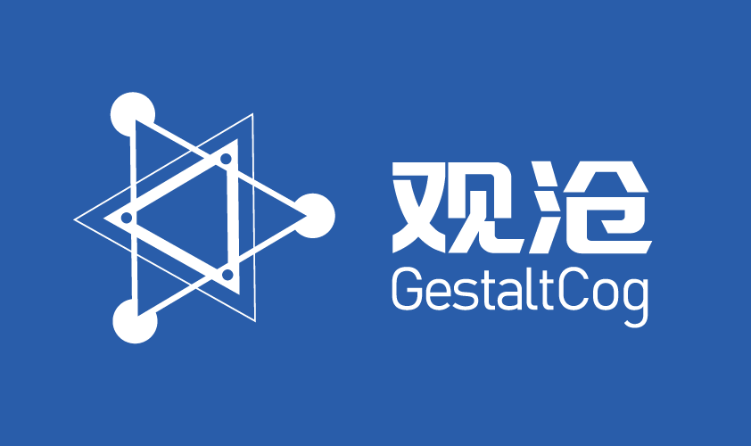
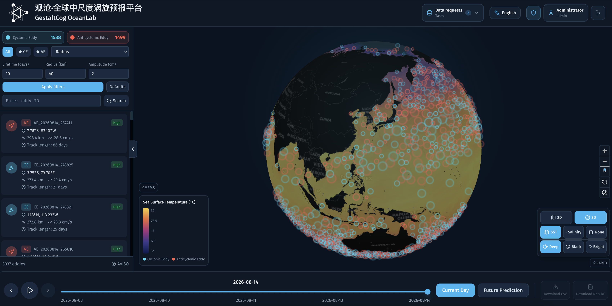
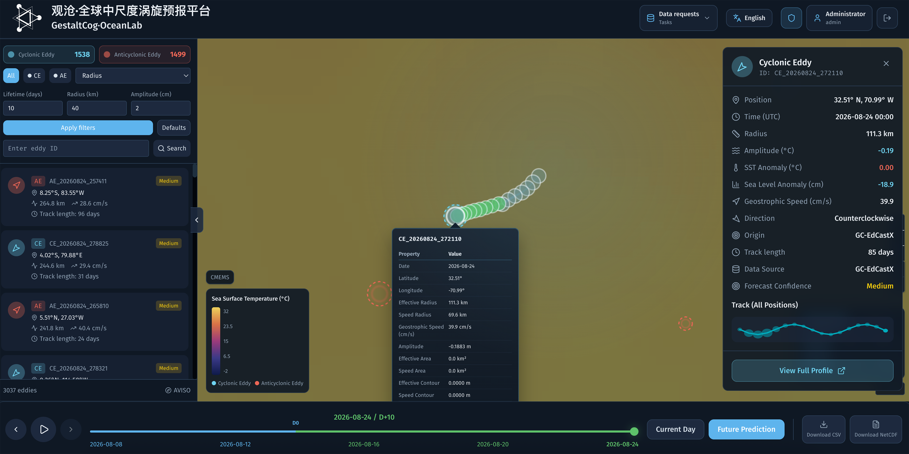
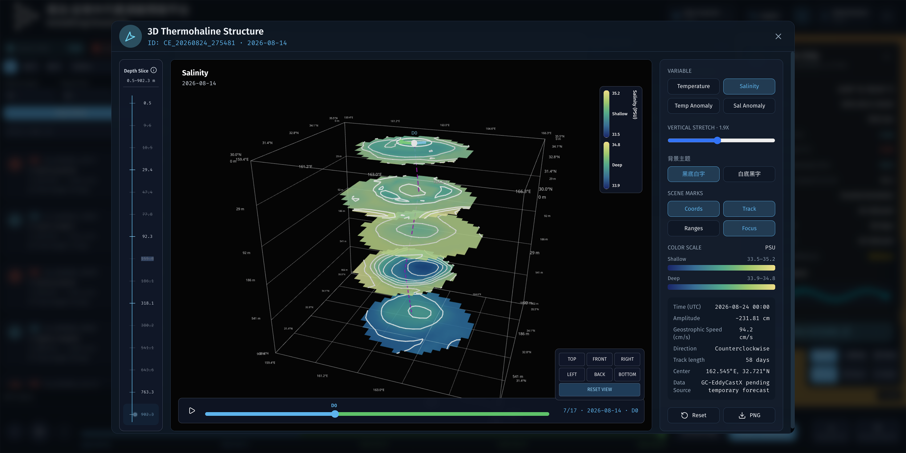

GC-EdCastX Eddy Forecasting
A spatiotemporal physics-informed eddy forecasting method that links eddies across consecutive time steps, precisely charting the daily evolution of position, radius, amplitude, and central height over the next ten days.

Physics-informed eddy forecasting meets sea-surface-observation-based 3D reconstruction — eddy tracking, subsurface structures, and ten-day forecasts, all presented online in one place.
Mesoscale eddies are the "pulse" of the ocean, holding roughly 80% of its total kinetic energy and profoundly shaping climate and marine environments. Yet research on them faces three enduring challenges: cumbersome data access, 3D structures that resist full view, and forecasts with nowhere to verify.
GestaltCog · OceanLab brings it all online: every eddy's full trajectory, daily parameters, and subsurface 3D temperature-salinity structure ready at a glance — no downloads, no setup. Looking ahead, our forecasting model projects ten days of eddy evolution.



Global eddies tracked online, historical trajectories replayed day by day.
10-day trajectory forecasting and 3D reconstruction integrated in one, subsurface structures evolving in sync.
Prediction and reconstruction accuracy benchmarked against existing global ocean forecasting AI systems, leading on core metrics.
Eddy parameters, 1/12° 3D structures, and high-resolution snapshots downloadable in one click.
An open-and-go online analysis tool for eddy dynamics and water mass transport studies — so ideas never wait for data.
A full visualization pipeline from trajectory tracking to 3D structure, laying the vertical architecture of every eddy bare.
Eddy position and evolution forecasts, giving fishing ground assessment and route planning a head start.
Interactive visualization that brings mesoscale eddies within reach, serving oceanography teaching and outreach.
Where tides rise and fall, the past and future of every eddy unfolds before your eyes.
Enter the Platform ↗